Ejercicios de la definición de derivada
Calcula, mediante la definición de derivada, la derivada de las funciones en los puntos que se indican:
1f(x) = 3x2 en x = 2.
2f(x) = x2 + 4x − 5 en x = 1.
3f(x) = x2 − x + 1 en x = −1, x = 0 y x = 1.
4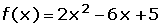 en x = -5.
5 en x = 1.
en x = 1.
6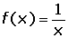 en x = 2.
7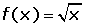 en x = 3.
8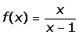 en x = 2.
Soluciones 
- 1
- 2
- 3
- 4
- 5
- 6
- 7
- 8
Ejercicio 1 resuelto
Hallar la derivada de la función f(x) = 3x2 en el punto x = 2.
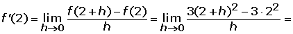
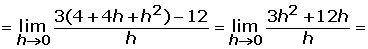
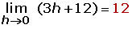
Ejercicio 2 resuelto
Calcular la derivada de la función f(x) = x2 + 4x − 5 en x = 1.
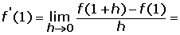
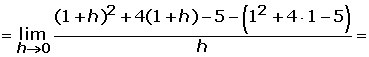
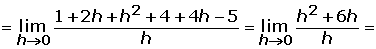
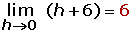
Ejercicio 3 resuelto
Calcular derivada de f(x) = x2 − x + 1 en x = −1, x = 0 y x = 1.
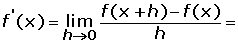
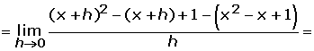
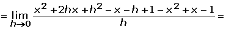
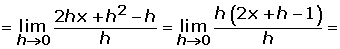
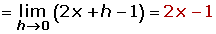
f'(−1), f'(0) y f'(1).
f'(−1) = 2(−1) − 1 = −3
f'(0) = 2(0) − 1 = −1
f'(1) = 2(1) − 1 = 1
Ejercicio 4 resuelto
Calcular derivada de en x = −5.
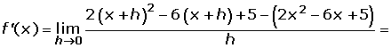
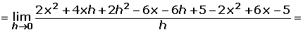
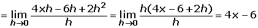

Ejercicio 5 resuelto
Calcular derivada de en x = 1.
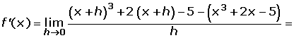


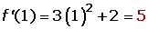
Ejercicio 6 resuelto
Calcular derivada de en x = 2.
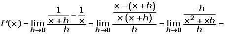


Ejercicio 7 resuelto
Calcular derivada de en x = 3.
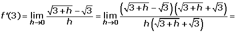


Ejercicio 8 resuelto
Calcular derivada de en x = 2.


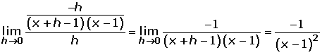
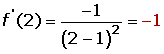
 Ejercicios
Ejercicios